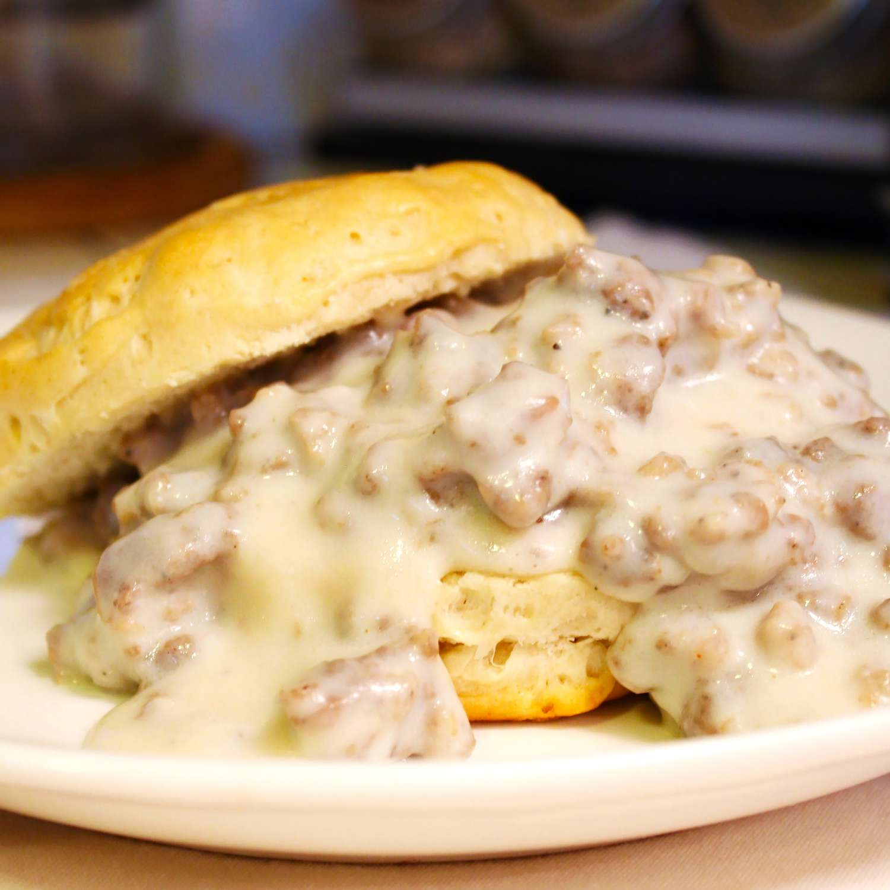

Southern Biscuits and Sausage Gravy

Prep Time: 5mins - Cook Time: 10mins - Servings: 8
Make quick and easy biscuits and gravy with this shortcut recipe. This hearty, old-fashioned breakfast is perfect for beginners and pros alike!
Ingredients
- Biscuits (Jumbo Buttermilk)
- Sausage
- Flour
- Milk
- Salt and Pepper
How To Make
- Prepare jumbo buttermilk biscuits.
- Cook the sausage.
- Add the flour, then stir in the milk and bring to a boil.
- Reduce to a simmer and continue cooking for two minutes.
- Season to taste